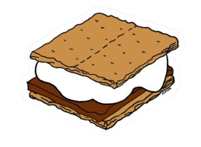
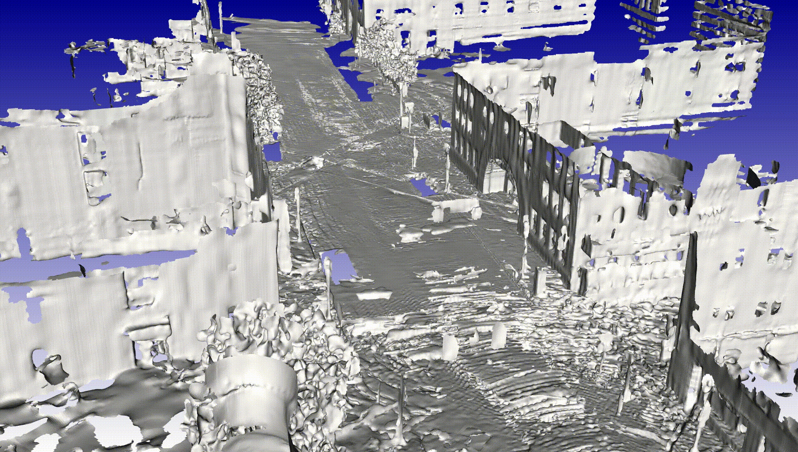
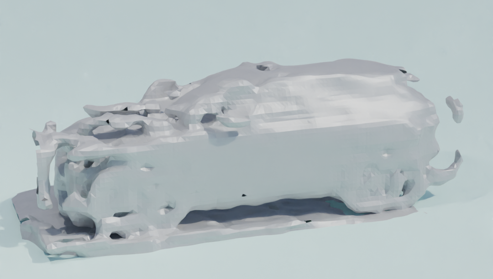
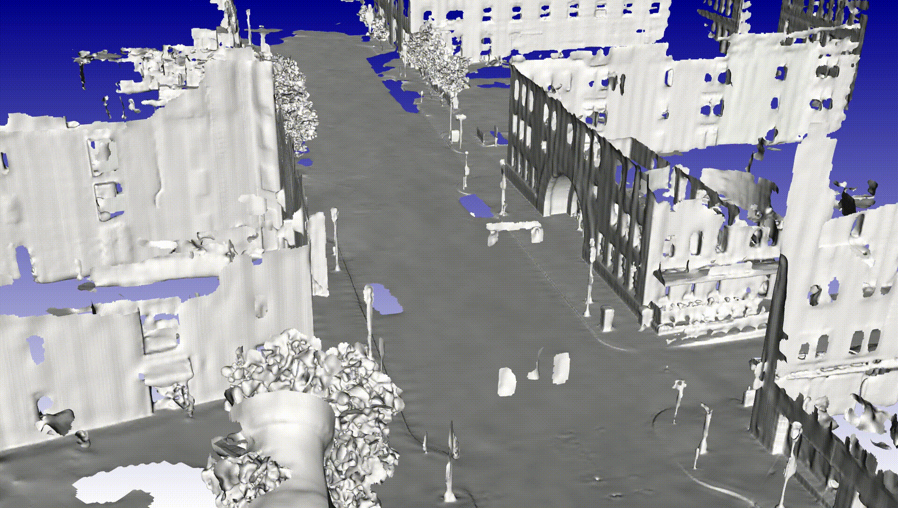
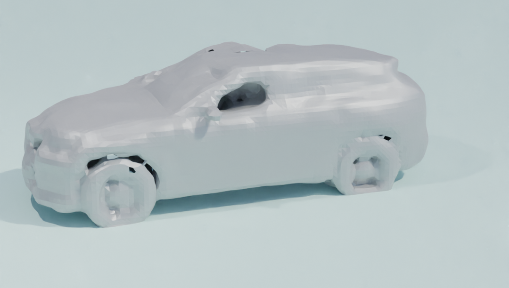
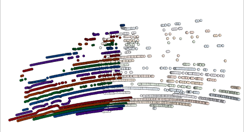
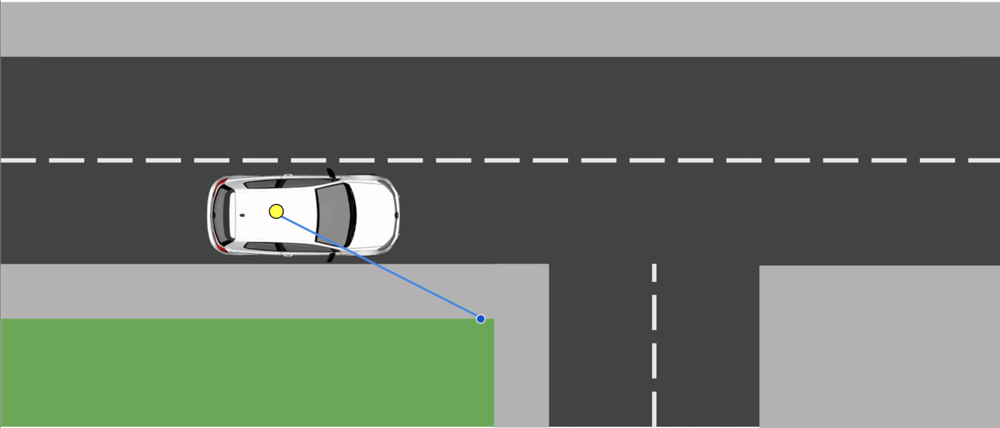
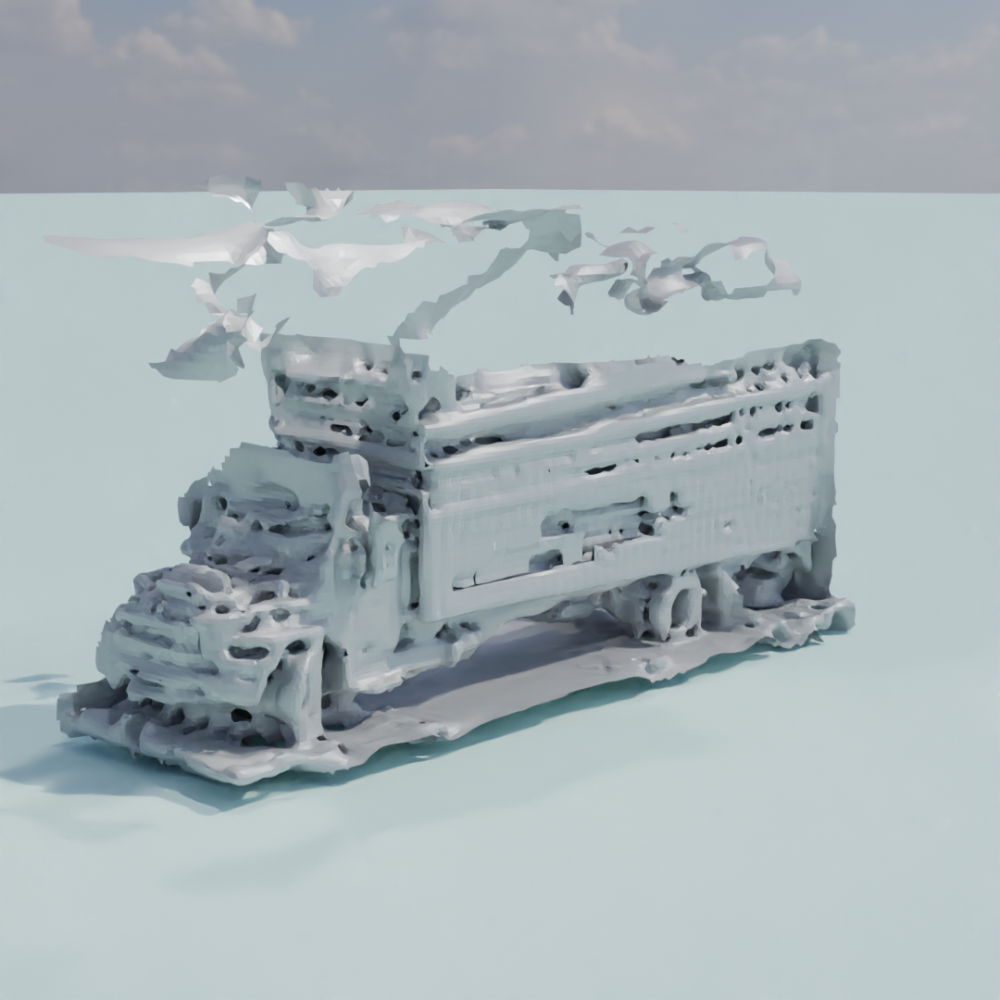
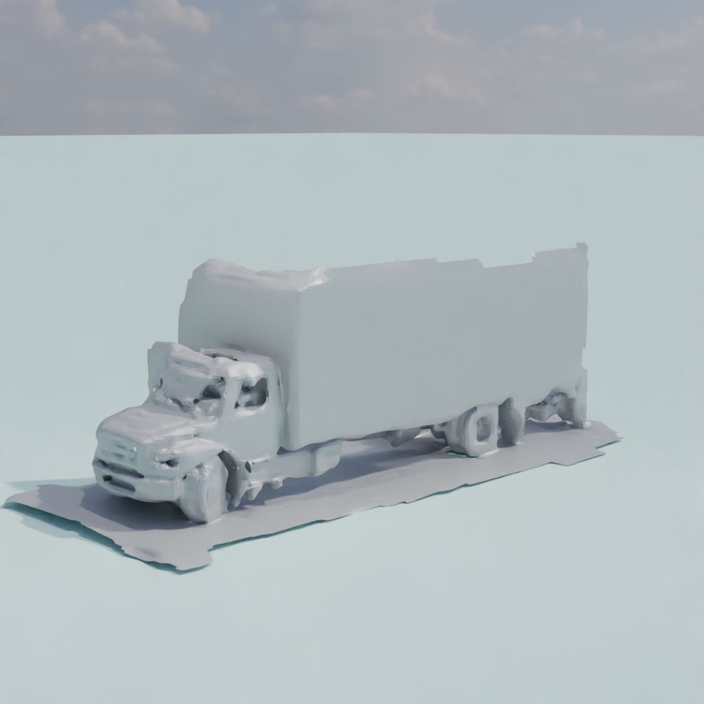

Method Overview


: Simultaneous Map and Object REconstructionWe present a method for dynamic surface reconstruction of large-scale urban scenes from LiDAR. Depth-based reconstructions tend to focus on small-scale objects or large-scale SLAM reconstructions that treat moving objects as outliers. We take a holistic perspective and optimize a compositional model of a dynamic scene that decomposes the world into rigidly-moving objects and the background. To achieve this, we take inspiration from recent novel view synthesis methods and frame the reconstruction problem as a global optimization over neural surfaces, ego poses, and object poses, which minimizes the error between composed spacetime surfaces and input LiDAR scans. In contrast to view synthesis methods, which typically minimize 2D errors with gradient descent, we minimize a 3D point-to-surface error by coordinate descent, which we decompose into registration and surface reconstruction steps. Each step can be handled well by off-the-shelf methods without any re-training. We analyze the surface reconstruction step for rolling-shutter LiDARs, and show that deskewing operations common in continuous time SLAM can be applied to dynamic objects as well, improving results over prior art by 10X. Beyond pursuing dynamic reconstruction as a goal in and of itself, we propose that such a system can be used to auto-label partially annotated sequences and produce ground truth annotation for hard-to-label problems such as depth completion and scene flow.




We can improve over ground-truth odometry and object annotations provided in flagship datasets such as NuScenes!
Revolving LiDAR sensors do not have a global shutter. Instead, they rotate continuously and measure depth across 16-128 vertically arranged lasers, typically taking 100ms to complete a 360-degree rotation. Most datasets abstract away this continuous capture and instead provide LiDAR returns as groups of 360-degree sweeps.

(Left) The ego-vehicle passes a moving car that is captured at both the start and end of a sweep, leading to the driver being captured twice. (Right) We visualise each point according to the time it was acquired, with lighter = earlier and darker = later.

Consider a fast-moving ego-vehicle passing by a building. In a naively motion-compensated sweep, it is possible to sample hidden surfaces of the building, leading to incorrect estimates of freespace (shown in red), which may complicate surface reconstruction.


Rolling Shutter is no longer a bug, but a feature that turns LiDAR from a noisy 10Hz sensor to an accurate 4000Hz sensor!
@article{chodosh2024simultaneous,
title={Simultaneous Map and Object Reconstruction},
author={Chodosh, Nathaniel and Madan, Anish and Ramanan, Deva and Lucey, Simon},
journal={arXiv preprint arXiv:2406.13896},
year={2024}
}